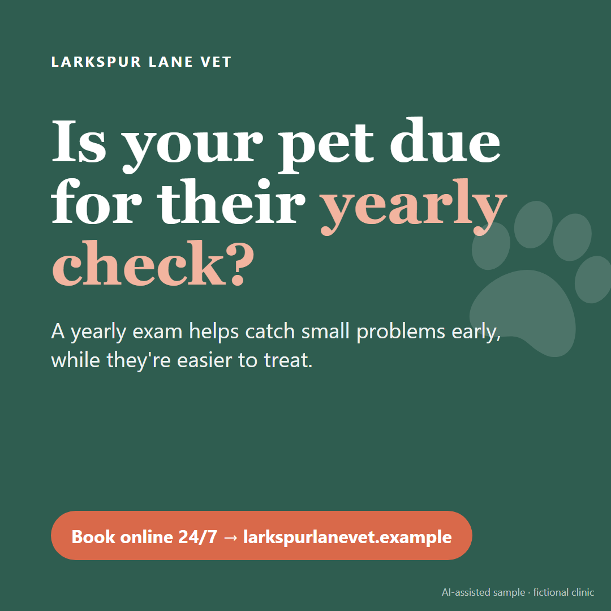
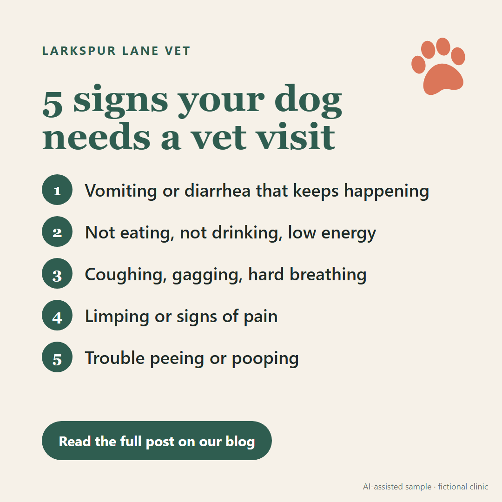
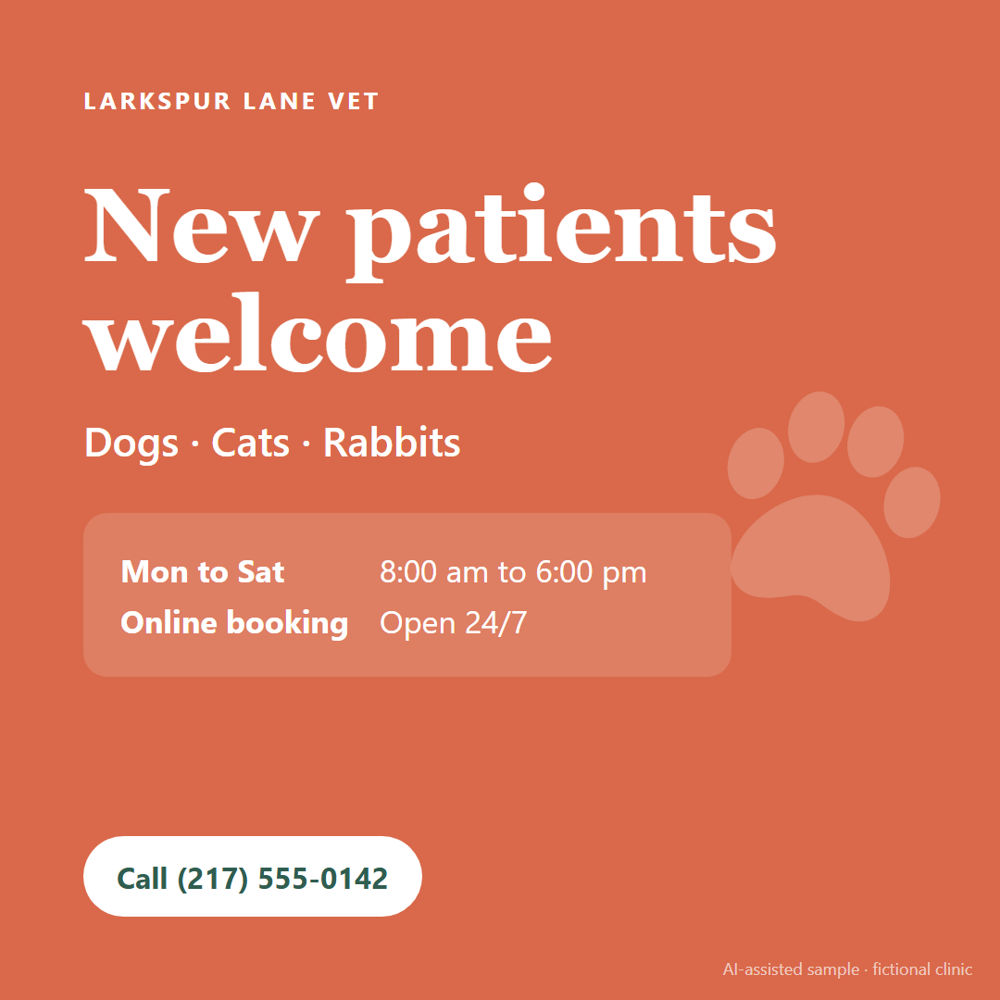

Work samples
Every sample is for one fictional client, Larkspur Lane Veterinary Clinic, so you can see how the tasks fit together in a real small business.
These are AI-assisted samples. They show the kind of work I'm ready to do and the quality I aim for. To see my own work, I'm happy to do a short trial task.
-
Client list cleanup
A messy export with duplicates, four phone formats and mixed dates, turned into a clean list with reminder formulas and a summary.
Excel workbook and the original CSV -
Customer support email replies
A reschedule, a frustrated client, and a new client question, each with a note on why the reply works.
PDF, 3 pages -
Research brief: online booking tools
Four booking tools compared on price and fit for a small clinic, with a clear recommendation and sources.
PDF, 2 pages -
Inbox and calendar SOP
A daily routine for the clinic inbox: labels, response times, calendar rules, templates and when to escalate.
PDF, 3 pages -
Blog post: 5 signs your dog needs a vet visit
A short, friendly article for pet owners, based on veterinary sources and cited.
PDF, 2 pages -
Voiceover scripts
A 30-second phone greeting and a 60-second promo, with pacing marks. I record these in my own voice.
PDF, 2 pages
Social media graphics
Three posts for the clinic's Facebook and Instagram, sized 1080 by 1080.

Yearly check reminder 
Blog post teaser 
New patients welcome


My own writing
Outside of these samples, I write fiction. This is a story of my own that I post on Wattpad, written from scratch without AI tools.
-
Veil of the Valyrian Dawn
An ongoing fantasy drama and romance on Wattpad. A prologue and 7 chapters so far, about 6,500 words, with over 200 reads.
Wattpad, ongoing since 2023
How I use AI tools
I use ChatGPT and other AI tools to work faster, but I stay responsible for what gets sent.
What I use them for
- First drafts of emails, posts and articles, which I then edit to fit your tone
- Summarizing long documents and email threads
- Starting research, then checking every fact against the original source
- Cleaning up data and writing spreadsheet formulas
Rules I follow
- I never paste private client or customer details into AI tools
- Facts, prices and numbers get checked before anything is sent
- Health questions always go to the professional, never to an AI answer
- If you prefer no AI on your work, I'm fine with that
Why the vet clinic samples
I'm studying BS Veterinary Technology at Davao del Sur State College, now on an academic break. I know how a clinic front desk works, the words vets and pet owners use, and why calm, clear communication matters when someone's pet is sick. I'm happy to work in any industry, and pet care is where I can add the most from day one.
Let's work together
The best way to reach me is through my OnlineJobs.ph profile. Send me a message there and I'll reply within the day. You can also email me at javierjenneviee@gmail.com.